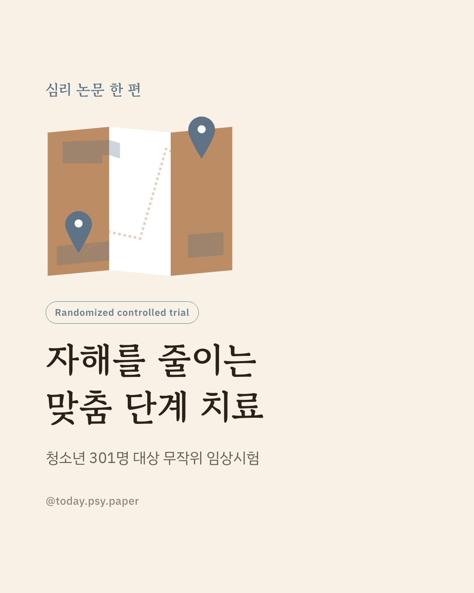
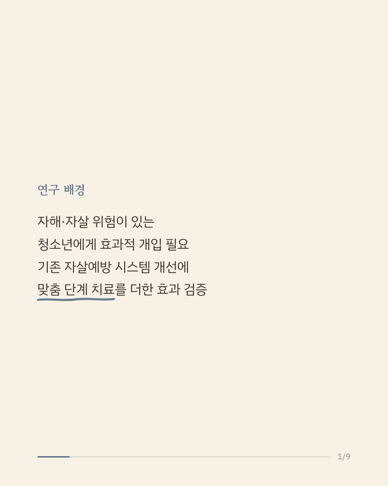
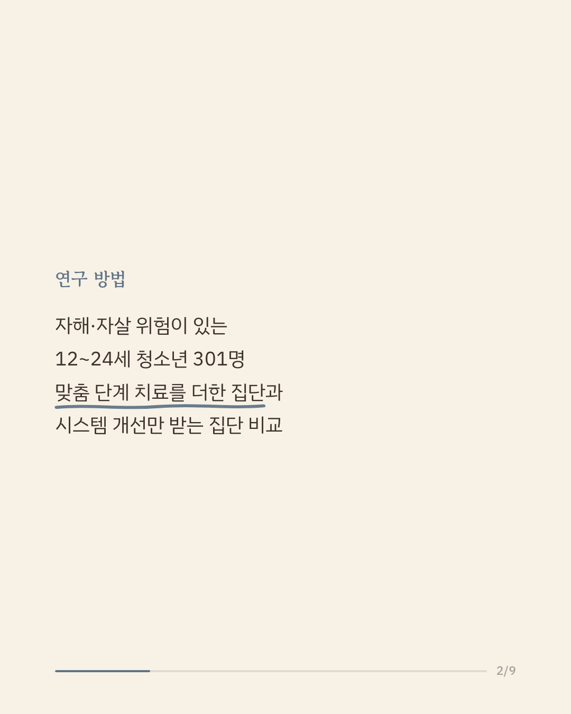
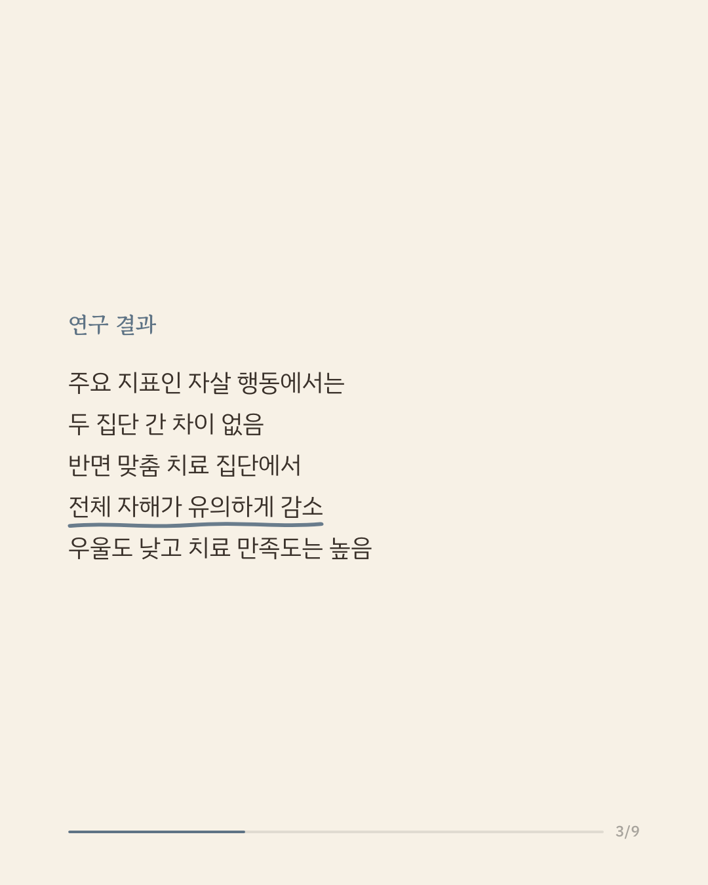
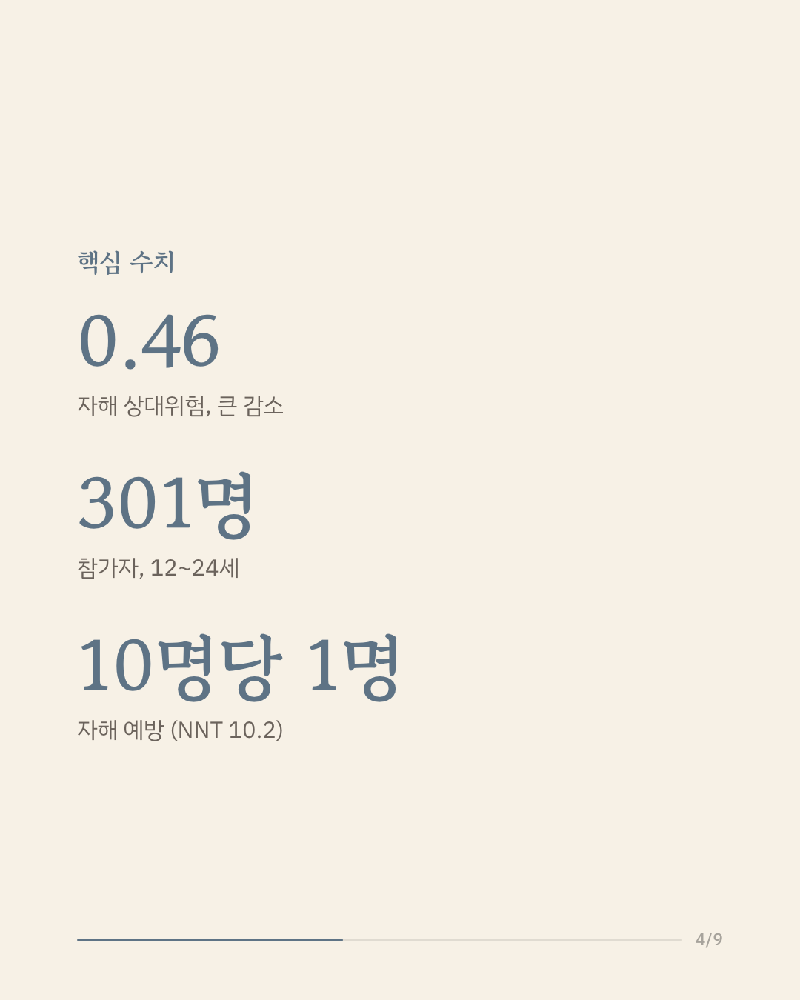
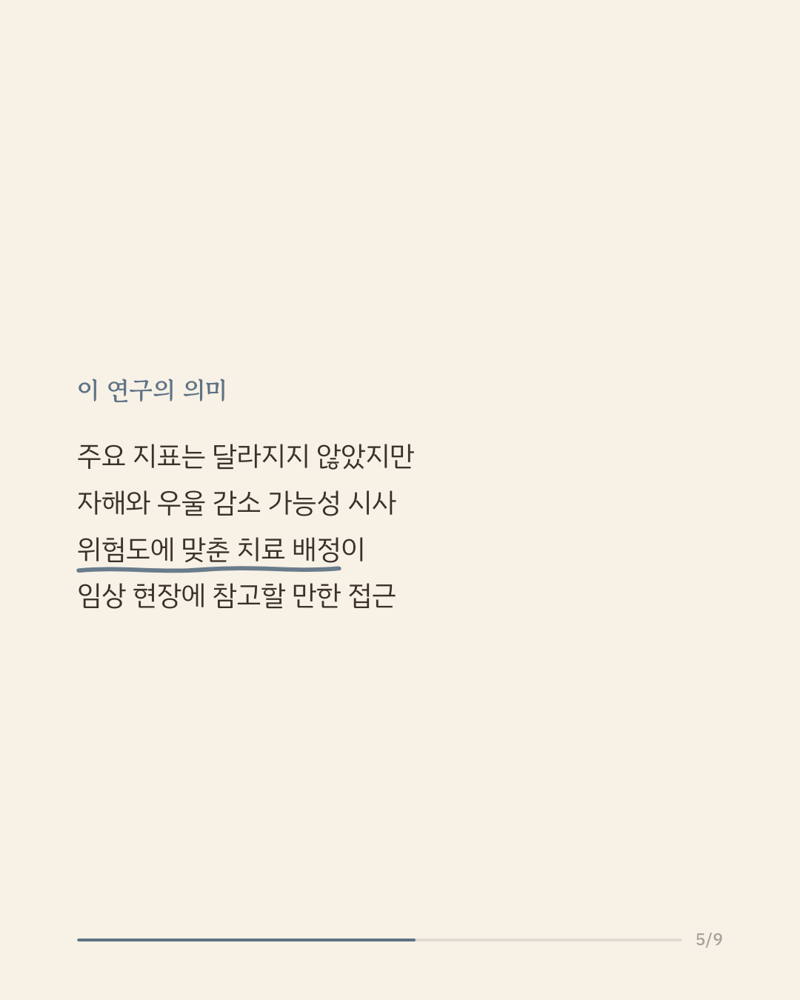
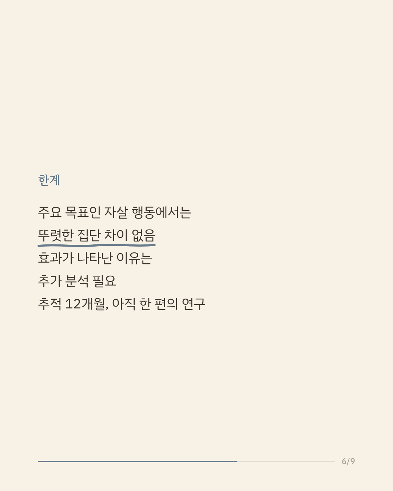
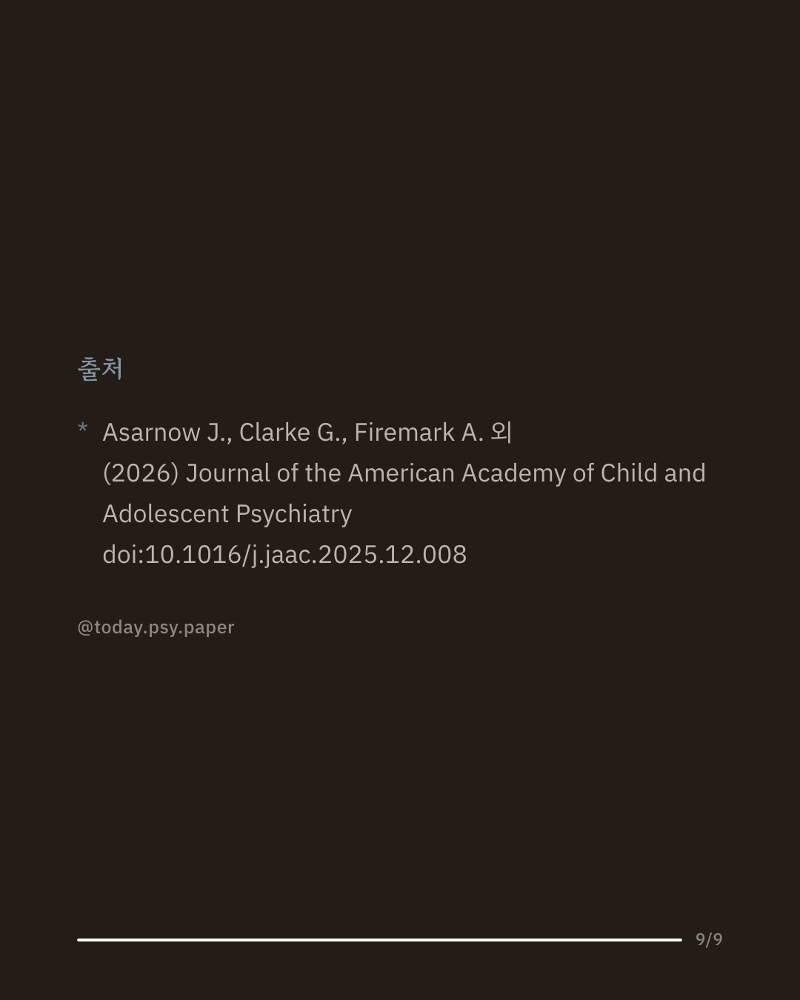

청소년기의 자해와 자살 위험을 줄이는 일은 정신건강 분야의 중요한 과제입니다. 병원 시스템 차원의 자살예방 노력은 이미 확산되고 있지만, 그것만으로 충분한지는 분명하지 않았습니다. 미국 연구진은 12~24세 청소년 301명을 대상으로, 기존 시스템 개선에 위험도별 '맞춤 단계 치료'를 더했을 때 효과가 있는지 무작위 임상시험으로 살펴봤습니다. 주요 지표였던 12개월간 자살 행동에서는 두 집단 간 뚜렷한 차이가 나타나지 않았습니다. 다만 맞춤 단계 치료를 받은 청소년은 전체 자해가 유의하게 적었고(상대위험 0.46), 우울 수준도 더 낮았으며 치료에 대한 만족도는 더 높았습니다. 주요 목표는 달성하지 못했지만, 위험 수준에 맞춰 치료 강도를 조절하는 방식이 자해와 우울을 줄이는 데 도움이 될 가능성을 보여줍니다. 다만 추적 기간이 12개월로 제한적이고 효과가 나타난 이유는 아직 분명하지 않으며, 단일 연구이므로 확대 해석은 조심해야 합니다. 출처: Journal of the American Academy of Child and Adolescent Psychiatry (2026), 'Stratified Stepped-Care for Reducing Suicide Attempts and Self-Harm in Youth: A Randomized Clinical Trial' 힘든 마음이 들 때는 자살예방상담전화 109, 정신건강상담전화 1577-0199에서 도움을 받을 수 있습니다. #임상심리 #정신건강정보 #청소년정신건강 #자살예방 #심리학연구
python3 publish.py 41448486